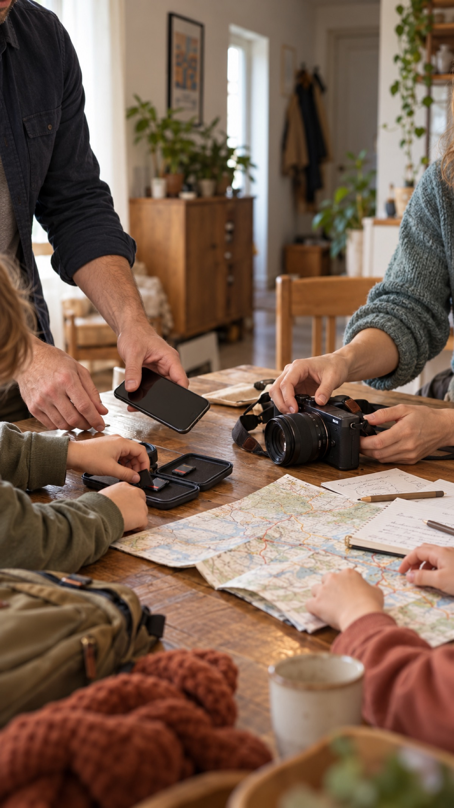

Momentro Guides · Family and travel films
How to share family and travel videos without an unnecessary quality drop
The best sharing method is the one that lets people press play easily—without sending your only good copy through a chain of smaller, blurrier copies.

Finish the film before you solve every sharing question
After a family holiday or a long trip, it is tempting to start sending clips straight away: one in a chat, another by email, another from a social app. Then the actual film remains unfinished while several different versions begin to exist.
Start by keeping one finished master somewhere you can find again. It is the version you can return to if you later need a different sharing copy for a television, a phone, or a relative who prefers a link.
Think about the person receiving it
There is no universal “best” way to share. A grandparent may be happiest with one easy link. Friends may only need a short, watchable version in the group chat. Your own household may want the full film on the television.
Let the viewing moment decide the format. If the film is meant to be watched on a big screen, do not make the compressed chat version the only version that survives.
Keep one master, then make copies for the moment
A sensible rhythm is simple: keep the exported master, then make a smaller sharing copy only when it helps. Most messaging and social services create their own compressed version after upload, so sending the same file through several services can make it harder to know which copy is the good one.
This is not a reason to make sharing complicated. It is a reason to keep the original export somewhere safe and let every other copy have a clear purpose.
A film that is easy for someone to open and enjoy is more valuable than a technically perfect file that never leaves your computer.
For a large collection, do the work once
Family and travel footage often comes from several phones, cameras, cards, and shared folders. Gathering a selected set and making the first draft can take time, especially with many large files. The timing depends on the files and the computer doing the work.
With Momentro, you can start the analysis on your desktop, then get on with the rest of your day while the computer handles that long pass. Return to review the draft, make a small change if you want one, then export a film that is ready to keep and share.
A small sharing checklist
- Keep one finished master in a folder you can find again.
- Decide who is receiving this version and how they will watch it.
- Use a straightforward link or file share when the full version matters.
- Use a shorter copy for casual chat sharing if that makes viewing easier.
- Keep the master, so you can make another version later without starting over.
Make the film worth sharing first.
Momentro helps you turn selected family and travel clips into a draft you can review and export on your computer.